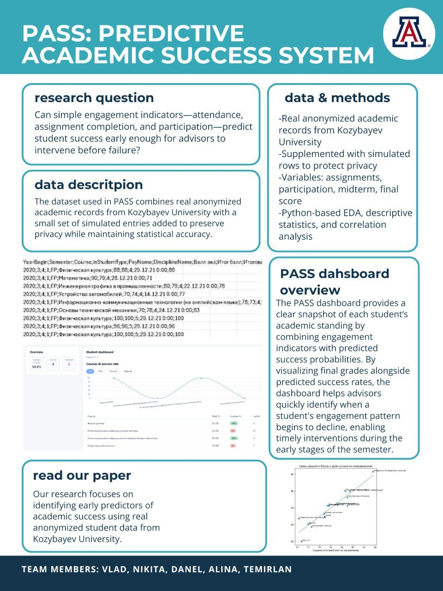
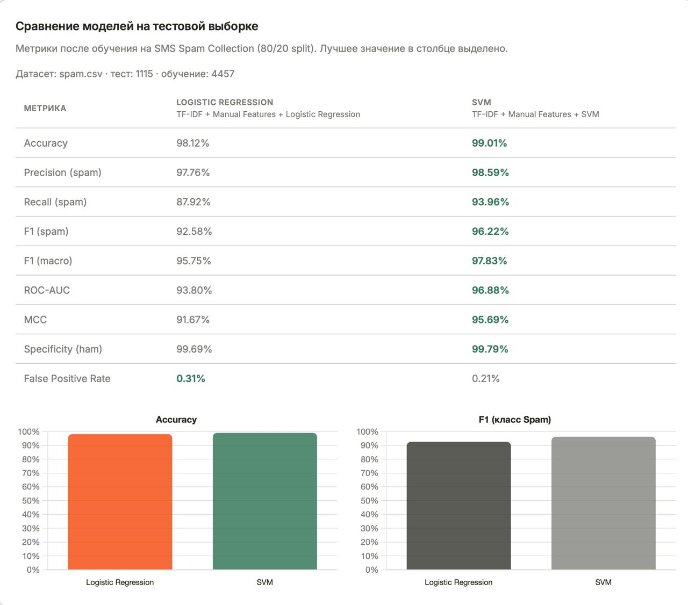

Data Scientist — analytics & machine learning
I turn raw data into decisions using PythonGitFastAPI and store it in PostgreSQL. Studied Information Systems in Management, with an exchange semester at the University of Arizona.
Projects

Machine Learning
Predictive Academic Success System — FastAPI backend predicts a student's academic risk from grades and ratings, served through a live dashboard.
Automation / Tooling
Phone-controlled remote for my PC — a FastAPI server exposes shutdown, sleep, volume, and app-launch endpoints from a lightweight web UI.

Machine Learning
Diploma project detecting SMS spam with Logistic Regression and Naive Bayes, streamed through Kafka with a Node.js API and a live model-comparison dashboard.
Technologies
Education
Until 2022
BEST Gymnasium
Petropavlovsk, Kazakhstan
Year 4, exchange
University of Arizona
One semester in the US as part of an exchange program
Bachelor's degree
NKU named after M. Kozybayev
Information Systems in Management
Outside the IDE
I'm a big fan of sports, gaming, and music. I'm also a big fan of watching movies.
GitHub Activity
Loading...
Let's work together.
Open to data analysis, dashboards, and machine learning projects — Python, SQL, and BI tooling.